← All workProject 2 of 12
Project 02Designed and simulated, not built
6-DOF Robotic Arm
A six-axis desktop arm designed for 3D printing: 538 mm reach, 0.5 kg design payload, my own gear, belt and jackshaft drives, a 111-part Inventor assembly, dynamics and FEA.
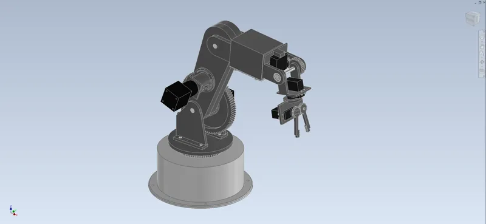
- Reach
- 538mm
- Design payload
- 0.5kg
- Shoulder gearbox SF with acceleration
- 2.14
- Parts in assembly
- 111
01Overview
A desktop six-axis arm designed in Inventor around off-the-shelf actuators: NEMA17 steppers with StepperOnline planetary gearboxes at the base, shoulder and elbow, and DSSERVO digital servos at the wrist and gripper. I designed every reduction stage myself: printed involute spur gears on J1, J2, J4 and J5, and an HTD 5M belt inside the box-section upper arm for J3. The belt puts the elbow motor next to the shoulder, which takes torque off J2.
Joint angles are Inventor parameters that drive a fully constrained assembly, and each gear pinion is tied to its joint so the teeth stay in mesh at any pose. All structural parts and gears are designed to print in PA6-CF on a Bambu printer.
A later buildability check against the real gearbox ratings found the 0.5 kg payload marginal at the shoulder once acceleration is included, and both PG19 output shafts overloaded sideways (the 100 N rating). I kept the 0.5 kg payload and respecced the drives: a higher shoulder ratio, jackshafts in their own bearings so the gearboxes carry torque only, wider wrist gears, slotted gearbox mounts and D-bored pinions. The model, drawings, BOM and calculations were rebuilt; the arm has not been built.
Tools Autodesk Inventor 2027 / Python / scikit-fem / gmsh / NumPy / Matplotlib / Bambu Studio
What I did
- Sized every joint from a Newton-Euler model built on the CAD mass properties. A grid search over the joint ranges found the worst static torque, and I checked each motor, gearbox and gear stage for torque, speed and gearbox rating.
- Modelled involute gears in Inventor and coupled each pinion to its joint through the ratio and mesh phase; interference stays at zero over a full tooth pitch on every pair.
- Validated the kinematics by driving Inventor's solver to random poses and comparing it with my Python forward kinematics, then swept every joint with interference checks to set collision-free limits.
- Ran gmsh + scikit-fem FEA on the critical printed parts. The DfAM check showed the horn bolt holes cutting into the pinion roots and high gear tooth stress, so I redesigned the gears.
Specification
- Payload / reach
- 0.5 kg; 538 mm shoulder-to-TCP at full extension, 390 mm tool-down at table height
- Link lengths
- L1 204 / L2 200 / L3 192 / wrist-to-TCP 146 mm, spherical wrist
- Mass (Inventor)
- 2.09 kg moving, 5.26 kg total incl. base
- Assembly
- 111 occurrences, 48 unique files, 229 constraints, all 0 DOF
- Actuators
- J1 17HS19-PG5, J2/J3 17HS19-PG19 on jackshafts with Ruland MJC25 jaw couplings, J4/J5 DS3235, J6 + gripper DS3218 (servos at 6 V)
- Total ratios
- J1 20.7:1, J2 103.2:1 (16:86 m1.75), J3 57.6:1 (HTD belt), J4 1.5:1 (16:24 m1.25), J5 2:1 (16:32 m1.25), J6 1:1
- Material
- PA6-CF (links, gears, drive mounts), PETG (base, cover); 25 printed parts on 9 Bambu plates
02Design decisions7 changes
- 01
Belt-driven elbow to unload the shoulder
- Finding
- The shoulder (J2) is the most heavily loaded joint: 6.54 N.m worst static torque at full extension against 13.3 N.m of continuous capacity. A motor mounted at the elbow would add its own mass to the end of that lever.
- Action
- Drove the elbow (J3) through an HTD 5M belt inside the box-section upper arm, so the elbow motor sits next to the shoulder instead of out on the arm.
- Outcome
- The belt stage gives J3 a 57.6:1 total ratio with a 137 N tight-side load (SF 2.19); J2 now has a static SF of 2.30 after the respec.
- 02
Gears redesigned after the DfAM check
- Finding
- The design-for-printing check showed the servo-horn bolt holes cutting into the pinion roots, and tooth bending stress was the weak point of the printed gears.
- Action
- Redesigned the gears and re-checked every pair with the Lewis equation and Barth velocity factor against a 30 MPa allowable for printed PA6-CF.
- Outcome
- After the respec the lowest tooth safety factor is 1.68 (J1); J2 2.45, J4 2.78, J5 2.61.
- 03
Pinions tied to their joints
- Finding
- Joint angles are parameters that drive the whole assembly, so free-floating gears would drift out of mesh as the arm moves.
- Action
- Coupled each pinion to its joint in Inventor through the gear ratio and the mesh phase.
- Outcome
- Zero interference over a full tooth pitch on every gear pair.
- 04
Joint limits set by interference sweeps
- Finding
- Datasheet ranges say nothing about where the printed links hit each other.
- Action
- Swept every joint through its range in Inventor with interference checks at fixed poses of the other joints.
- Outcome
- Collision-free limits: J1 ±170 deg, J2 -60 to 110 deg, J3 ±100 deg, J4 and J6 ±180 deg, J5 -60 to 100 deg.
- 05
Buildability check: gearbox shafts and wrist gears
- Finding
- My first analysis checked torque but not the gearbox shaft side-load rating. The J3 belt pulls the PG19 output shaft sideways with 117-130 N against a 100 N rating. With acceleration included, J2 needs 7.06 N.m, which leaves the gearbox at SF 1.88 with 107 N of side load. The printed J4/J5 wrist gears would strip if a servo stalled (107-116 MPa tooth stress against 102 MPa UTS).
- Action
- Decision: keep the 0.5 kg payload rather than derate to 0.3 kg. Side load scales as T_joint / (eta r_gear cos 20), so no realistic ratio change fixes it: the J2 pinion and the J3 pulley now ride on 8 mm jackshafts in two 608 bearings each, driven through Ruland MJC25 jaw couplings (8.48 N.m) on printed stand-offs, so the gearboxes carry torque only. J2 went from 18:84 to 16:86 at the same 89.25 mm centres; J3 belt tension moved to eccentric 608 housings.
- Outcome
- Gearbox SF with acceleration 1.88 -> 2.14 (SF 2 holds up to 0.58 kg); gearbox side load 107-130 N -> torque only (jackshaft 608s at 50-65 N, s0 21 or more; couplings SF 6-8).
- 06
Wrist gears that survive a stalled servo
- Finding
- At a 7.4 V stall the printed J4 and J5 pinions see 116 and 107 MPa against a 102 MPa UTS, and J4 ran at a working SF of 1.22.
- Action
- Run the servos at 6 V, widen the J4 gears from 8 to 14 mm (servo moved back 6 mm), and change J5 from m1.0 20:40 to m1.25 16:32 at the same 30 mm centres.
- Outcome
- Stall stress 60.6 MPa (J4, SF 1.68) and 84.8 MPa (J5, SF 1.20); working tooth SF 2.13 / 2.03.
- 07
Interfaces to real parts, and the clashes the rebuild found
- Finding
- The PG19 bolt circle was assumed (30 mm; the usual 36 mm NEMA17 planetary is 28 mm) and the pinions had plain round bores. Rebuilding the assembly then showed the stand-off gearbox screw heads inside the tube bore and the bigger 86T gear clipping a cheek foot screw.
- Action
- Slotted every gearbox mount for a 28-30 mm bolt circle, D-bored the J1/J2 pinions, opened the stand-off tubes to 34.5/35 mm and moved the foot screws 6 mm out.
- Outcome
- 111 parts, 0 DOF, 0 clashes at 5 poses apart from one explained overlap (the J1 D-bore on the round shaft of the one-piece motor model); the joint ranges from the interference sweep are unchanged.
03Views8 renders


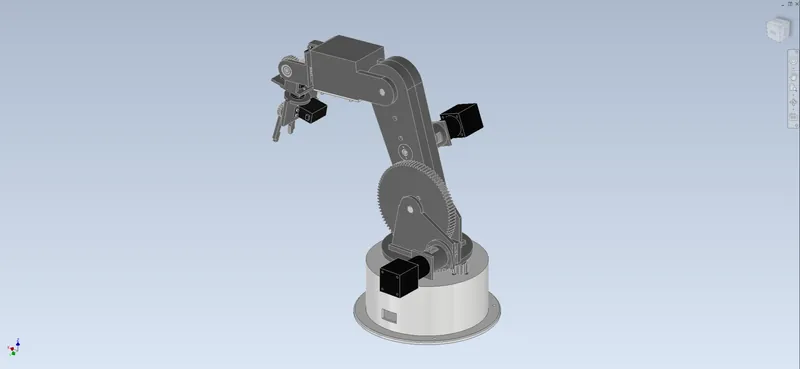

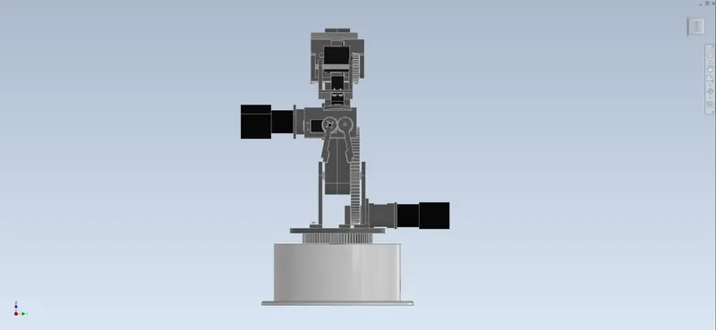

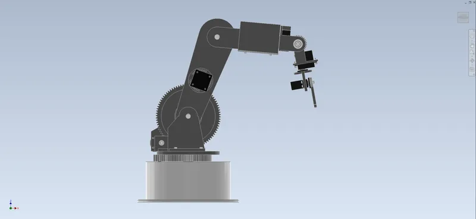

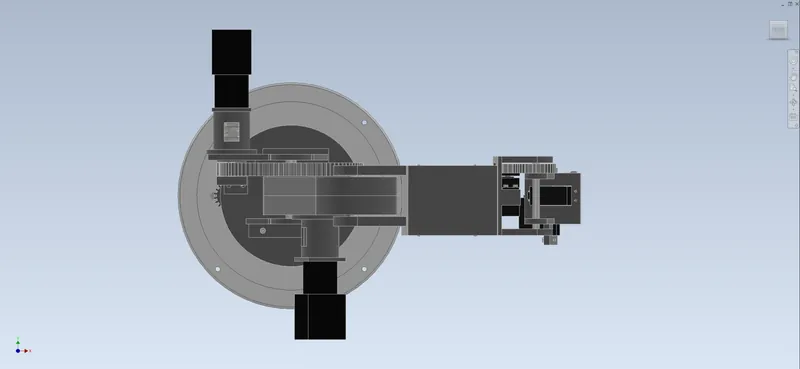

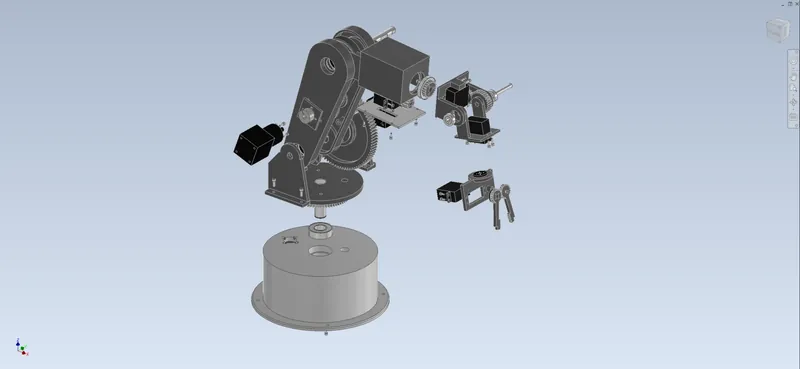

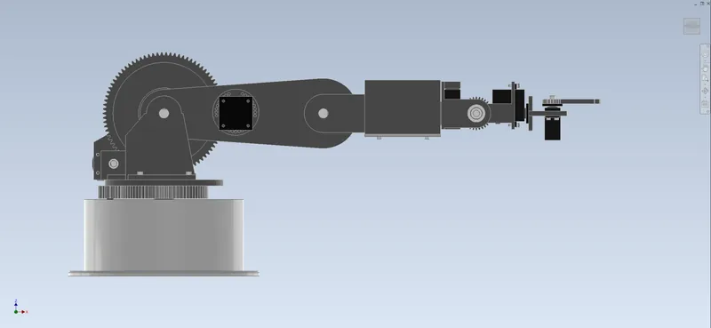

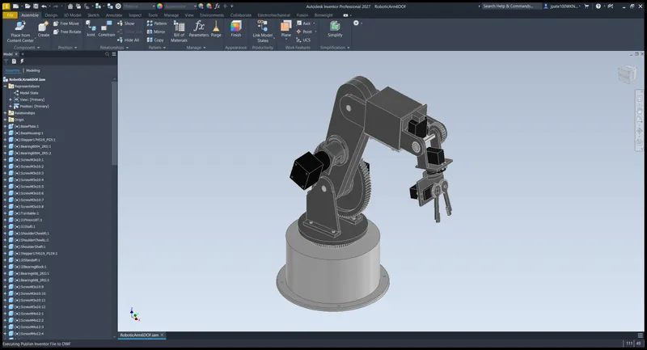
04Drawings6 sheets

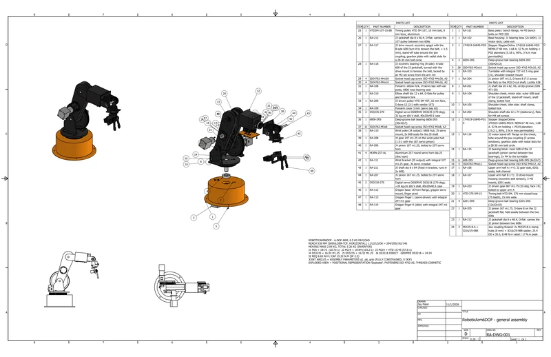

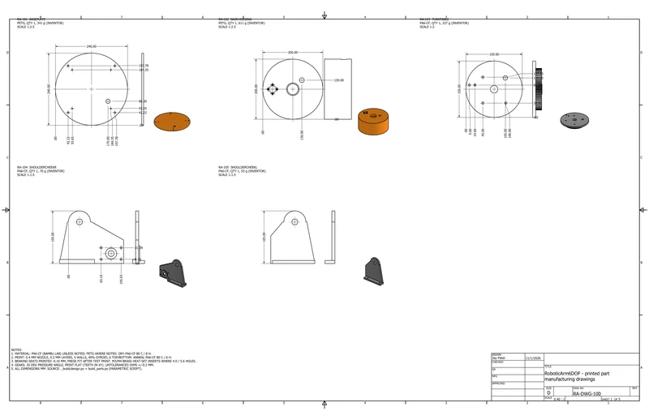

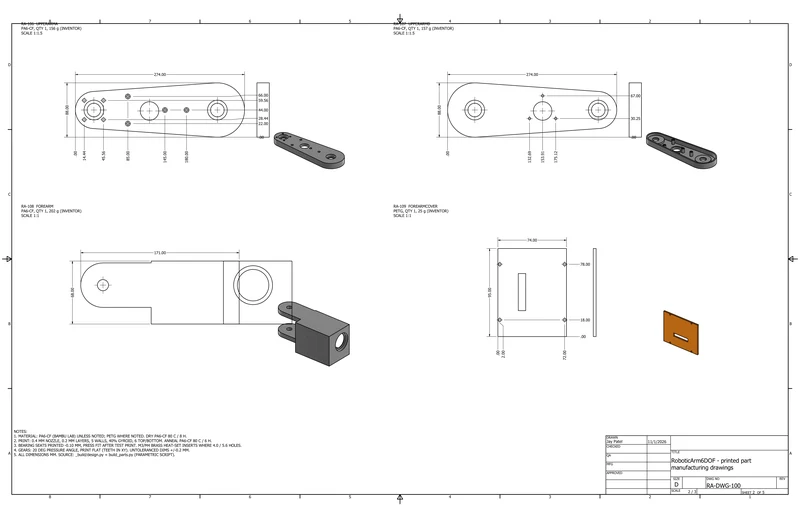

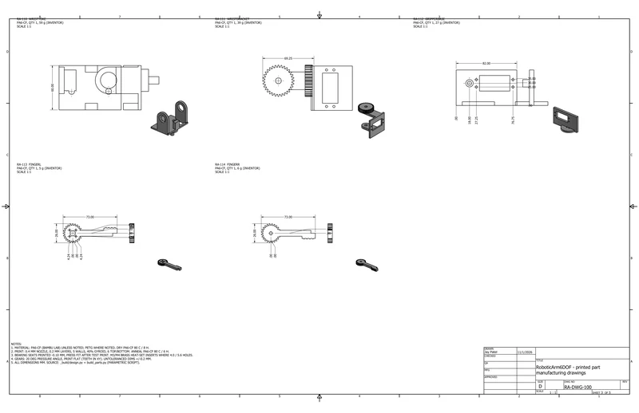

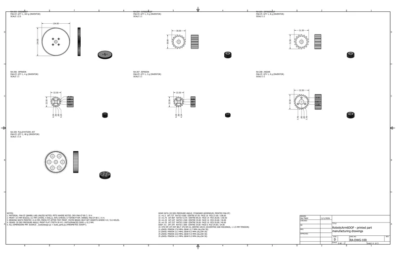

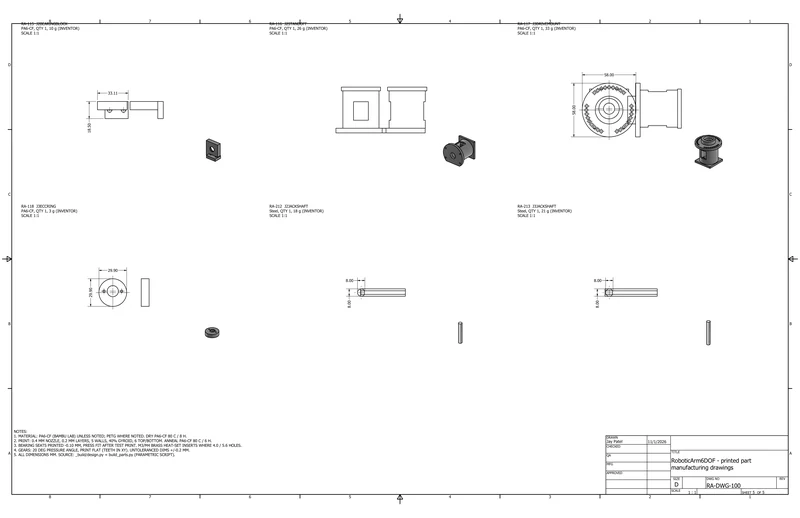
05Analysissimulated unless stated
A1 Kinematics and motion

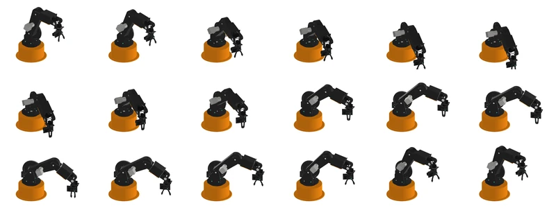

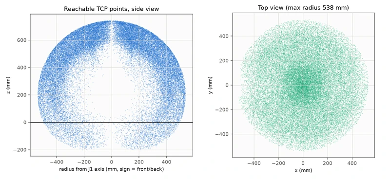

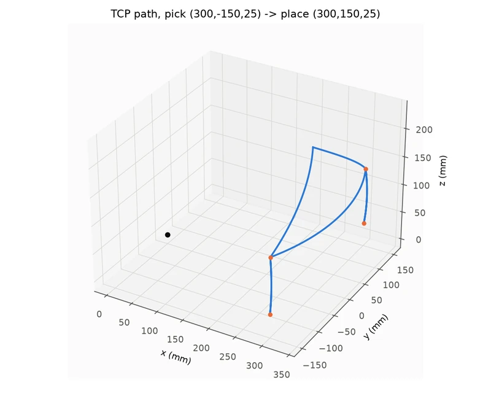
A2 Joint torque and dynamics

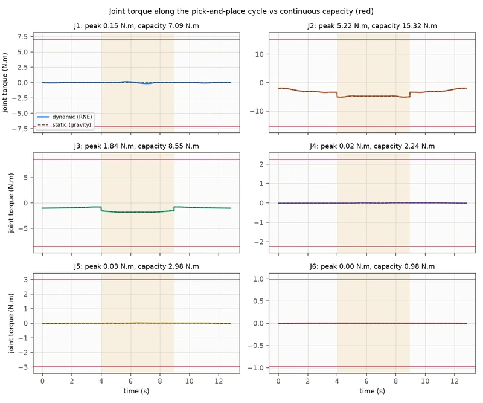

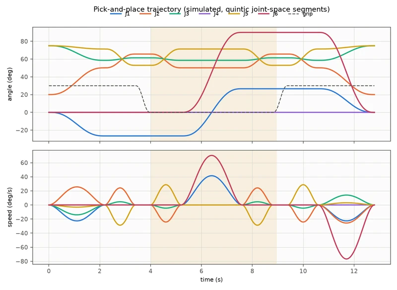

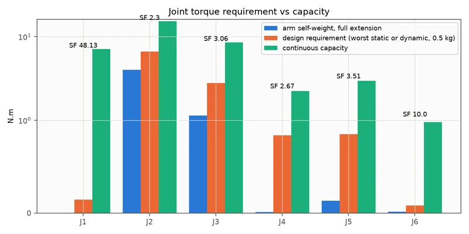

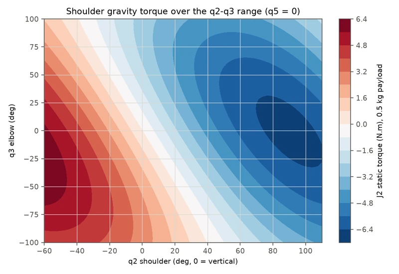
A3 Structural FEA

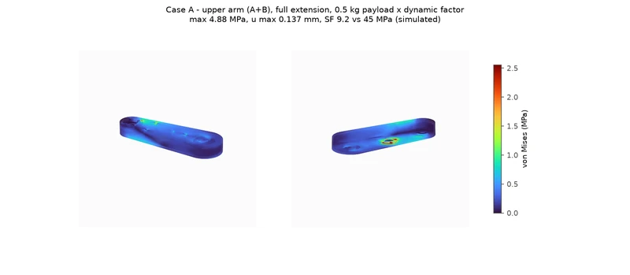

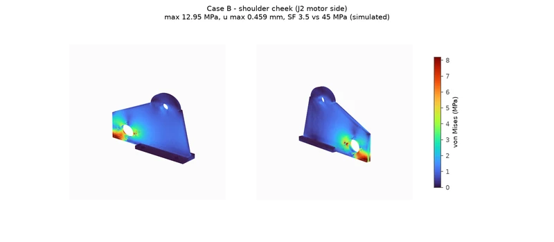

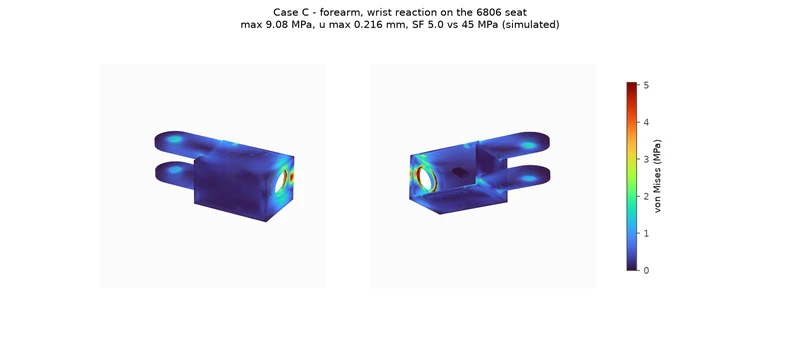
06Results11 checks
| Check | Result | Margin / status |
|---|---|---|
| Shoulder J2 worst static torque (0.5 kg, full extension) | 6.65 N.m required vs 15.3 N.m continuous capacity | SF 2.30 static; gearbox SF 2.14 with 2 rad/s2 (was 2.03 / 1.88) |
| Elbow J3 worst static torque | 2.80 N.m vs 8.55 N.m | SF 3.1; gearbox SF 2.91 |
| Gearbox shaft side load (respec) | J2 107 N and J3 117-130 N vs 100 N rated -> torque only; jackshaft 608s 50-65 N (s0 21+), couplings SF 6.0 / 8.2 | Calculated |
| Wrist teeth at a 6 V servo stall | J4 60.6 MPa, J5 84.8 MPa vs 102 MPa UTS (first design stripped at 7.4 V) | SF 1.68 / 1.20, calculated |
| Pick-and-place cycle, Newton-Euler dynamics (12.8 s) | J2 stepper SF 4.7, gearbox peak 1.02 of 3 N.m | Simulated |
| Forward kinematics, Inventor solver vs Python model | 0.0004 mm max TCP error over 11 poses (rebuilt model) | Validated in CAD |
| Interference: 5 poses + joint sweeps (rebuilt model) | 0 clashes; one explained overlap (J1 D-bore on the round shaft of the motor model, 14.4 mm3); ranges unchanged | Measured in Inventor |
| FEA upper arm / shoulder cheek / forearm (x1.5 dynamic, first design) | 4.9 / 13.0 / 9.1 MPa peak, 0.14 / 0.46 / 0.22 mm | SF 9.2 / 3.5 / 5.0 vs 45 MPa (not re-run after the respec) |
| Gear teeth (Lewis + Barth factor) | Lowest SF 1.68 (J1), J2 2.45, J4 2.78, J5 2.61 | Calculated, 30 MPa allowable |
| Gripper and belt | 9.6 N per jaw vs 5.1 N needed (friction 0.5, so rubber pads); belt tight side 137 N | SF 1.88 / 2.19 |
| DfAM check (FDM, 45 deg, 1.2 mm walls) | 25/25 parts watertight, walls pass, 13 print with no supports | Measured on STLs |
07Parts list64 lines, $703.34
From the project's bill of materials (RoboticArm6DOF_BOM.csv), grouped by how you get each part. Quantities are from the CAD assembly. Prices marked Confirmed were checked against a vendor listing; Est. prices are estimates. Designed and calculated, not built.
- Buy · 53 pcs
- 24lines
- Print · 25 pcs
- 25lines
- Fabricate · 6 pcs
- 6lines
- Hardware · 77 pcs
- 9lines
- Confirmed
- $303.56 43.2%
- Est.
- $399.78 56.8%
Complete per the buildability check: every part it lists for a working build is in this BOM. Open items are below.
Made in Inventor designed and modelled by me Vendor model a purchased part, maker's or catalogue model placed in the assembly Stand-in model a simple placeholder shape Not in CAD needed to run it, not modelled
P1 Buy purchased and vendor parts · 24 lines, 53 pcs
| Qty | Part no. | Description | Unit | Line |
|---|---|---|---|---|
| 2 off | 17HS19-1684S-PG19 | Stepper StepperOnline 17HS19-1684S-PG19: NEMA17 48 mm, 1.68 A, 52 N.cm holding + PG19 planetary (19.2:1, 80%, 3 N.m max permissible)Vendor modelSource: StepperOnline · Material: SteelPrice: StepperOnline page blocked (403); ozrobotics.com (AU reseller) lists the PG19 at $33.02 + shipping; buy_list inferred $36 | $36.00 | $72.00Est.2 × $36.00 |
| 1 off | 17HS19-1684S-PG5 | Stepper StepperOnline 17HS19-1684S-PG5: NEMA17 48 mm, 1.68 A, 52 N.cm holding + PG5 planetary (5.18:1, 90%, 3 N.m max permissible)Vendor modelSource: StepperOnline · Material: SteelPrice: (listing, buy_list 2026-10-28): eBay US $34.99 (StepperOnline 17HS19-1684S-PG5, spec copy calls it PG5X); not re-read 2026-10-29 | $34.99 | $34.99Confirmed1 × $34.99 |
| 2 off | 6004-2RS | Deep-groove ball bearing 6004-2RS (20x42x12)Stand-in modelSource: SKF / NSK / any · Material: Steel, AlloyPrice: (listing): VXB 10-Pack 6004-2RS 20x42x12, SKU 6004-2RS, $39.99 / pack of 10 = 4.00 each (checked 2026-10-29) | $4.00 | $8.00Confirmed2 × $4.00 |
| 6 off | 608-2RS | Deep-groove ball bearing 608-2RS (8x22x7)Vendor modelSource: step.parts catalogue part · Material: Steel, AlloyPrice: (listing): VXB 100-Pack 608-2RS Blue Seals, SKU 608-2RS-Blue, $49.99 / pack of 100 = 0.50 each (checked 2026-10-29); single 608 bearings ~ $1-2 elsewhere | $0.50 | $3.00Confirmed6 × $0.50 |
| 4 off | 6201-2RS | Deep-groove ball bearing 6201-2RS (12x32x10)Vendor modelSource: step.parts catalogue part · Material: Steel, AlloyPrice: (listing): VXB 10 Pack 6201-2RS 12x32x10, SKU kit880, $29.99 / pack of 10 = 3.00 each (checked 2026-10-29) | $3.00 | $12.00Confirmed4 × $3.00 |
| 1 off | 6806-2RS | Deep-groove ball bearing 6806-2RS (30x42x7)Stand-in modelSource: SKF / NSK / any · Material: Steel, AlloyPrice: (listing): VXB 6806-2RS 30x42x7 single, SKU 6806-2RSBearing, $9.99 (checked 2026-10-29) | $9.99 | $9.99Confirmed1 × $9.99 |
| 2 off | DS3218-270 | Digital servo DSSERVO DS3218 (270 deg), ~20 kg.cm @6 V stall, 40x20x40.5 caseStand-in modelSource: DSSERVO · Material: ABS PlasticPrice: (listing): rcdrone.top DSServo DS3218 Digital Servo, variant 'DS3218 270 Degree' (/products/dsservo-ds3218-digital-servo), $24.81 (checked 2026-10-29); AliExpress-sourced stock | $24.81 | $49.62Confirmed2 × $24.81 |
| 2 off | DS3235-270 | Digital servo DSSERVO DS3235 (270 deg), 32 kg.cm @6 V stall, 40x20x40.5 caseStand-in modelSource: DSSERVO · Material: ABS PlasticPrice: (listing): rcdrone.top Dsservo DS3235, variant '270 Degree' (/products/dsservo-ds3235-waterproof-servo), $24.59 (checked 2026-10-29); AliExpress-sourced stock | $24.59 | $49.18Confirmed2 × $24.59 |
| 4 off | HORN-25T-AL | Aluminium 25T round servo horn dia 25 (disc type)Stand-in modelSource: DSSERVO / generic · Material: Aluminum 6061Price: 25T aluminium disc servo horn ~ $3 each (buy_list); needs M2 re-drill per CAD | $3.00 | $12.00Est.4 × $3.00 |
| 1 off | HTD-375-5M-15 | Timing belt HTD 5M, 375 mm closed loop (75 teeth), 15 mm wideStand-in modelSource: Gates / any HTD supplier · Material: RubberPrice: Gates 375-5M-15 from ~$17.25 at imssupply.com (page 403, seen only in search result); Contitech 375 5M 15 ~EUR 11 at RS; buy_list $12 | $17.00 | $17.00Est.1 × $17.00 |
| 1 off | HTD5M-15T-15-B8 | Timing pulley HTD 5M 15T, 15 mm belt, 8 mm bore, aluminiumVendor modelSource: step.parts catalogue part · Material: Aluminum 6061Price: HTD 5M 15T aluminium 15 mm/8 mm bore; Texas Belting 18T 8 mm bore is $14.19 (read 2026-10-29), exact 15T not found; buy_list $9 | $12.00 | $12.00Est.1 × $12.00 |
| 2 off | MJC25-8-A + JD16/25-98R | Jaw coupling Ruland: 2x MJC25-8-A clamp hubs (8 mm) + JD16/25-98R spider; 25.4 OD x 35.3, 8.48 N.m rated / 17 N.m peakStand-in modelSource: Ruland · Material: Aluminum 6061Price: Ruland 2x MJC25-8-A clamp hubs + JD16/25-98R spider (specs read from the Ruland datasheet 2026-11-01, price not shown) ~ $30 per hub + $10 spider | $70.00 | $140.00Est.2 × $70.00 |
| 1 off | RA-601 | Stepper controller BIGTREETECH SKR Mini E3 V3.0 (STM32G0B1, 4 x TMC2209 UART on board, 12-24 V, 3 endstop inputs): J1 / J2 / J3 steppers + homing, custom firmwareNot in CADSource: BIGTREETECH · Material: -Price: (listing): BIQU biqu.equipment/products/btt-skr-mini-e3-v2-control-board (BIGTREETECH SKR Mini E3 V3.0, 'Without cable'), SKU 1060000511, $49.85 (checked 2026-10-29) | $49.85 | $49.85Confirmed1 × $49.85 |
| 1 off | RA-602 | Servo PWM driver Adafruit 815 PCA9685 16-channel 12-bit, I2C (J4, J5, J6 and gripper servos)Not in CADSource: Adafruit · Material: -Price: (listing): Adafruit adafruit.com/product/815 (PCA9685 16-ch PWM/Servo driver), $14.95 (checked 2026-10-29); page also showed 'Out of stock' | $14.95 | $14.95Confirmed1 × $14.95 |
| 1 off | RA-603 | Power supply Mean Well LRS-150-24 (24 V 6.5 A) for the steppersNot in CADSource: Mean Well · Material: -Price: Mean Well LRS-150-24; Jameco 1+ $18.80 and LCSC ~$13.5 seen in search results only (Digi-Key / Jameco pages blocked or no hit); buy_list $28 'from memory' | $19.00 | $19.00Est.1 × $19.00 |
| 1 off | RA-604 | Servo supply: 6 V 20 A buck converter (DC 8-40 V in, adjustable out, set to 6.0 V) for the 4 servosNot in CADSource: DROK / generic buck converter · Material: -Price: 6 V 20 A DC-DC buck module (DROK / generic, 8-40 V in) ~ $20 | $20.00 | $20.00Est.1 × $20.00 |
| 3 off | RA-605 | Homing endstop: lever microswitch (Omron SS-5GL class) on a printed tab at J1 / J2 / J3; open-loop steppers have no zero after power-up (tab not modelled)Not in CADSource: Omron / generic · Material: -Price: lever microswitch (Omron SS-5GL class) ~ $1.50 each (buy_list $3 for 3 sensors) | $1.50 | $4.50Est.3 × $1.50 |
| 1 off | RA-606 | Wiring kit: 4 servo extension leads 300 mm, 3 x 4-pin stepper cables 1 m, 2 m spiral wrap, 18 AWG power wire, 5 A fuse + holder, e-stop mushroom button (cuts the 24 V and 6 V supplies)Not in CADSource: Generic · Material: Copper / PVCPrice: servo extension leads + stepper cables + spiral wrap + 18 AWG wire + fuse holder + e-stop button (buy_list wiring $30, e-stop added) | $35.00 | $35.00Est.1 × $35.00 |
| 7 off | RA-615 | Heat-set insert M3 brass for the stand-off / drive-mount screws (cheek RA-104 x4, UpperArmB RA-107 x3)Not in CADSource: Ruthex / McMaster-Carr · Material: BrassPrice: M3 brass heat-set insert, pack of 100 ~ $20 | $0.20 | $1.40Est.7 × $0.20 |
| 1 off | RA-616 | Retaining compound Loctite 638, 10 ml (J1 / J2 pinion D-bores, coupling hubs)Not in CADSource: Henkel Loctite · Material: -Price: Loctite 638 10 ml ~ $12 | $12.00 | $12.00Est.1 × $12.00 |
| 5 off | RA-611 | Heat-set insert M4 brass (insert holes in UpperArmB RA-107)Not in CADSource: Ruthex / McMaster-Carr · Material: BrassPrice: M4 brass heat-set insert (Ruthex class), pack of 100 ~ $30 (buy_list $0.30 each) | $0.30 | $1.50Est.5 × $0.30 |
| 2 off | RA-612 | Silicone gripper pad 30 x 20 x 2 mm, adhesive-backed (bare PA6-CF pads give grip SF 1.13 at 0.5 kg)Not in CADSource: Generic · Material: Silicone rubber 40APrice: adhesive silicone pad 30x20x2 mm ~ $1.50 each (buy_list $3 for 2) | $1.50 | $3.00Est.2 × $1.50 |
| 1 off | RA-613 | PA6-CF filament 1 kg spool (about 0.7 kg of printed links and gears)Not in CADSource: Bambu Lab / Polymaker · Material: PA6-CFPrice: (listing): Polymaker US us.polymaker.com/products/fiberon-pa6-cf20, Black 1 kg, SKU FG03003 (Fiberon PA6-CF20), $52.99 / 1 kg spool (checked 2026-10-29) | $52.99 | $52.99Confirmed1 × $52.99 |
| 1 off | RA-614 | PETG filament 1 kg spool (about 0.55 kg: base, housings, covers)Not in CADSource: Bambu Lab / Polymaker · Material: PETGPrice: (listing): Polymaker US us.polymaker.com/products/petg, Black 1 kg, SKU PB05001 (Polymaker PETG), $18.99 / 1 kg spool (checked 2026-10-29) | $18.99 | $18.99Confirmed1 × $18.99 |
| Buy subtotal | $652.96 | |||
P2 Print 3D-printed parts · 25 lines, 25 pcs
| Qty | Part no. | Description | Unit | Line |
|---|---|---|---|---|
| 1 off | RA-101 | Base plate / bench flange, 4x M5 bench bolts on PCD 220Made in InventorSource: 3D printed in-house · Material: PETG (printed) | Incl. | |
| 1 off | RA-102 | Base housing: J1 bearing boss (2x 6004), J1 motor deck, cable exitMade in InventorSource: 3D printed in-house · Material: PETG (printed) | Incl. | |
| 1 off | RA-103 | Turntable with integral 72T m1.5 ring gear (J1), shoulder bracket mountMade in InventorSource: 3D printed in-house · Material: PA6-CF (printed) | Incl. | |
| 1 off | RA-104 | Shoulder cheek, motor side: outer 608 seat of the J2 jackshaft, stand-off mount, shaft clamp, bolted footMade in InventorSource: 3D printed in-house · Material: PA6-CF (printed) | Incl. | |
| 1 off | RA-105 | Shoulder cheek, idler side: shaft clamp, bolted footMade in InventorSource: 3D printed in-house · Material: PA6-CF (printed) | Incl. | |
| 1 off | RA-106 | Upper arm half A (+Y): J2 gear side, 6201 seats, belt channelMade in InventorSource: 3D printed in-house · Material: PA6-CF (printed) | Incl. | |
| 1 off | RA-107 | Upper arm half B (-Y): J3 drive-mount housing (eccentric belt tension), 3 M3 inserts, 6201 seatsMade in InventorSource: 3D printed in-house · Material: PA6-CF (printed) | Incl. | |
| 1 off | RA-108 | Forearm: elbow fork, J4 servo bay with ear posts, 6806 nose bearing seatMade in InventorSource: 3D printed in-house · Material: PA6-CF (printed) | Incl. | |
| 1 off | RA-109 | Forearm cover 3 mm (servo bay lid)Made in InventorSource: 3D printed in-house · Material: PETG (printed) | Incl. | |
| 1 off | RA-110 | Wrist yoke (J4 output): 6806 hub, J5 servo mount, 2x 608 seats for the J5 shaftMade in InventorSource: 3D printed in-house · Material: PA6-CF (printed) | Incl. | |
| 1 off | RA-111 | Wrist bracket (J5 output) with integral 32T m1.25 gear, J6 servo crossbarMade in InventorSource: 3D printed in-house · Material: PA6-CF (printed) | Incl. | |
| 1 off | RA-112 | Gripper base: J6 horn flange, gripper servo mount, finger pivotMade in InventorSource: 3D printed in-house · Material: PA6-CF (printed) | Incl. | |
| 1 off | RA-113 | Gripper finger L (servo-driven) with integral 24T m1 gearMade in InventorSource: 3D printed in-house · Material: PA6-CF (printed) | Incl. | |
| 1 off | RA-114 | Gripper finger R (idler) with integral 24T m1 gearMade in InventorSource: 3D printed in-house · Material: PA6-CF (printed) | Incl. | |
| 1 off | RA-115 | J2 bearing block: inner 608 of the J2 jackshaft (pinion carried between two bearings), 2x M4 to the turntableMade in InventorSource: 3D printed in-house · Material: PA6-CF (printed) | Incl. | |
| 1 off | RA-116 | J2 motor stand-off: flange on the cheek, tube around the jaw coupling (2 access windows), gearbox plate with radial slots for a 28-30 mm bolt circleMade in InventorSource: 3D printed in-house · Material: PA6-CF (printed) | Incl. | |
| 1 off | RA-117 | J3 drive mount: eccentric spigot with the B-side 608 (turn it to tension the belt, ±1.5 mm), stand-off tube around the jaw coupling, gearbox plate with radial slots for a 28-30 mm bolt circleMade in InventorSource: 3D printed in-house · Material: PA6-CF (printed) | Incl. | |
| 1 off | RA-118 | J3 eccentric bearing ring (A side): A-side 608 of the J3 jackshaft, turned with the drive mount to tension the belt, locked by an M3 set screw from the arm rimMade in InventorSource: 3D printed in-house · Material: PA6-CF (printed) | Incl. | |
| 1 off | RA-203 | J2 driven gear 86T m1.75 (20 deg, face 14), bolted to upper arm AMade in InventorSource: 3D printed in-house · Material: PA6-CF (printed) | Incl. | |
| 1 off | RA-204 | J1 pinion 18T m1.5, D-bore 8 (7.5 across the flat) on the PG5 D-cut shaft, Loctite 638Made in InventorSource: 3D printed in-house · Material: PA6-CF (printed) | Incl. | |
| 1 off | RA-205 | J2 pinion 16T m1.75, D-bore 8 on the J2 jackshaft flat, held axially between the two 608sMade in InventorSource: 3D printed in-house · Material: PA6-CF (printed) | Incl. | |
| 1 off | RA-206 | J4 pinion 16T m1.25, bolted to 25T servo hornMade in InventorSource: 3D printed in-house · Material: PA6-CF (printed) | Incl. | |
| 1 off | RA-207 | J5 pinion 16T m1.25, bolted to 25T servo hornMade in InventorSource: 3D printed in-house · Material: PA6-CF (printed) | Incl. | |
| 1 off | RA-208 | J4 gear 24T m1.25 on the wrist-yoke hub (1.5:1 with the 16T servo pinion)Made in InventorSource: 3D printed in-house · Material: PA6-CF (printed) | Incl. | |
| 1 off | RA-209 | J3 driven pulley HTD 5M 45T, 16 mm face, D-bore 12 (3:1 with vendor 15T)Made in InventorSource: 3D printed in-house · Material: PA6-CF (printed) | Incl. | |
| Print subtotal | $0.00 | |||
P3 Fabricate machined, welded and cut parts · 6 lines, 6 pcs
| Qty | Part no. | Description | Unit | Line |
|---|---|---|---|---|
| 1 off | RA-201 | J1 shaft dia 20 x 62, h6, circlip groove (DIN 471-20)Made in InventorSource: Machined (or ground rod, cut to length) · Material: Steel, AlloyPrice: one-off turning from 20 mm h6 ground rod (~$10 stock) + circlip groove (DIN 471-20); buy_list $12 | $14.00 | $14.00Est.1 × $14.00 |
| 1 off | RA-202 | Shoulder shaft dia 12 x 74 (stationary), flats for M4 set screwsMade in InventorSource: Machined from 12 mm h6 rod · Material: Steel, AlloyPrice: 12 mm h6 ground rod cut to 74 mm (~$6) + file/mill the two flats; buy_list $8 | $8.00 | $8.00Est.1 × $8.00 |
| 1 off | RA-210 | Elbow shaft dia 12 x 64, D-flats for pulley and forearm forkMade in InventorSource: Machined from 12 mm h6 rod · Material: Steel, AlloyPrice: 12 mm h6 ground rod cut to 64 mm (~$5.50) + D-flats by file/mill; buy_list $8 | $7.00 | $7.00Est.1 × $7.00 |
| 1 off | RA-211 | J5 shaft dia 8 x 84 (fixed in bracket, runs in 2x 608)Made in InventorSource: 8 mm h6 rod cut to length · Material: Steel, AlloyPrice: 8 mm h6 ground rod cut to 84 mm, no machining; buy_list $5 | $4.00 | $4.00Est.1 × $4.00 |
| 1 off | RA-212 | J2 jackshaft dia 8 x 48.4, D-flat: carries the J2 pinion between two 608sMade in InventorSource: 8 mm h6 rod, cut + flat ground · Material: Steel, AlloyPrice: 8 mm h6 ground rod cut to 48 mm + full-length flat ground (respec 2026-11-01) | $5.00 | $5.00Est.1 × $5.00 |
| 1 off | RA-213 | J3 jackshaft dia 8 x 56.4, D-flat: carries the 15T pulley between two 608sMade in InventorSource: 8 mm h6 rod, cut + flat ground · Material: Steel, AlloyPrice: 8 mm h6 ground rod cut to 56 mm + full-length flat ground (respec 2026-11-01) | $5.00 | $5.00Est.1 × $5.00 |
| Fabricate subtotal | $43.00 | |||
P4 Hardware fasteners, pins, keys, rings · 9 lines, 77 pcs
| Qty | Part no. | Description | Unit | Line |
|---|---|---|---|---|
| 28 off | ISO4762-M3x10 | Socket head cap screw ISO 4762 M3x10, A2Vendor modelSource: step.parts catalogue part · Material: Steel, AlloyPrice: ISO 4762 M3x10 A2, pack of 100 ~ $7 | $0.07 | $1.96Est.28 × $0.07 |
| 11 off | ISO4762-M3x8 | Socket head cap screw ISO 4762 M3x8, A2Vendor modelSource: step.parts catalogue part · Material: Steel, AlloyPrice: ISO 4762 M3x8 A2, pack of 100 ~ $7 | $0.07 | $0.77Est.11 × $0.07 |
| 5 off | ISO4762-M4x12 | Socket head cap screw ISO 4762 M4x12, A2Vendor modelSource: step.parts catalogue part · Material: Steel, AlloyPrice: ISO 4762 M4x12 A2, pack of 100 ~ $12 | $0.12 | $0.60Est.5 × $0.12 |
| 4 off | ISO4762-M4x16 | Socket head cap screw ISO 4762 M4x16, A2Vendor modelSource: step.parts catalogue part · Material: Steel, AlloyPrice: ISO 4762 M4x16 A2, pack of 100 ~ $14 | $0.14 | $0.56Est.4 × $0.14 |
| 4 off | ISO4762-M4x30 | Socket head cap screw ISO 4762 M4x30, A2Vendor modelSource: step.parts catalogue part · Material: Steel, AlloyPrice: ISO 4762 M4x30 A2, pack of 50 ~ $10 | $0.20 | $0.80Est.4 × $0.20 |
| 1 off | RA-607 | Retaining ring DIN 471-20 (J1 shaft groove is modelled on RA-201)Not in CADSource: McMaster-Carr / any · Material: Spring steelPrice: DIN 471-20 external retaining ring, pack of 10 ~ $5 | $0.50 | $0.50Est.1 × $0.50 |
| 1 off | RA-608 | Set screw ISO 4026 M3 x 5 locking the J3 eccentric ring RA-118 from the upper-arm rim (respec 2026-11-01)Not in CADSource: McMaster-Carr / any · Material: Steel 45H black oxidePrice: ISO 4026 M3x5 set screw, pack of 100 ~ $10 | $0.10 | $0.10Est.1 × $0.10 |
| 7 off | RA-609 | Socket head cap screw ISO 4762 M3 x 10: J2 stand-off flange to the cheek (4) and J3 drive mount to UpperArmB (3, in the arc slots) (respec 2026-11-01)Not in CADSource: McMaster-Carr / any · Material: A2 stainlessPrice: ISO 4762 M3x10 A2, pack of 100 ~ $7 | $0.07 | $0.49Est.7 × $0.07 |
| 16 off | RA-610 | Socket head cap screw ISO 4762 M2 x 6 (servo horn screws, 4 per horn)Not in CADSource: McMaster-Carr / any · Material: A2 stainlessPrice: ISO 4762 M2x6 A2, pack of 100 ~ $10 | $0.10 | $1.60Est.16 × $0.10 |
| Hardware subtotal | $7.38 | |||
P5 What else you need to make it work
From Tests/Buildability_Audit/buildability_audit.md (2026-10-28). Verdict: BUILDABLE WITH FIXES.
Also needed
- Firmware
- Stepper + servo control with a homing routine and soft position limits; close the gripper to object width minus about 2 mm, not to the hard stop.
- Test first
- Print a bearing-seat coupon first: printed seats for the 6004 / 6201 / 6806 / 608 usually need +0.1-0.2 mm.
- Printing
- PA6-CF needs a hardened nozzle, dried filament and an enclosed printer. UpperArmA / B (274 mm) only fit a 256 mm bed on the diagonal. The J3 drive mount needs tree supports under its flange (9 plates).
- Use
- The arm falls when the drivers switch off: keep them enabled and park the arm before powering down.
- Respec done
- 2026-11-01, payload kept at 0.5 kg: J2 16T:86T (gearbox SF 2.14), J2 pinion and J3 pulley on jackshafts in 608s with Ruland MJC25 couplings (PG19 shafts carry torque only), J4 face 14 / J5 m1.25, servos at 6 V, gearbox mounts slotted for PCD 28-30, D-bored pinions. The FEA was not re-run after the respec.
- Measure first
- The PG19 front bolt circle (mounts slotted for 28-30 mm) and the coupling hub fit on the 8 mm D-cut shafts.
Now in the BOM: Stepper drivers + controller; Servo PWM driver; 24 V 150 W power supply; Servo supply; 3 homing sensors; Wiring; DIN 471-20 retaining ring for the J1 shaft; 16 x M2 horn screws; 5 or more M4 heat-set inserts for the insert holes in UpperArmB; Silicone / rubber gripper pads; Filament.
Cost in the buildability file: BOM $703.34 after the 2026-11-01 respec ($303.56 confirmed on vendor pages, $399.78 estimated incl. two Ruland jaw couplings).
- Download BOM (CSV)CSV · 19 kB
- Buildability auditMD · 13 kB
- Buy list from the auditCSV · 6 kB
08Files6 downloads
- Calculation reportPDF · 1.1 MB
- Assembly drawingPDF · 386 kB
- Manufacturing drawingsPDF · 552 kB
- Bill of materialsCSV · 19 kB
- Test summaryMD · 11 kB
- Motion studyGIF · 1.8 MB

09Limits and assumptionsread before quoting a number
Everything here is calculated or simulated from the CAD model; the arm has not been built. The FEA pictures and the motion study are from the first design: the respec added bearing bosses and moved the motor weights about 50 mm outboard, and the FEA was not re-run. The coupling price and the PG19 bolt circle are not confirmed (the mounts are slotted for 28-30 mm). The main assumptions are a stepper pull-out curve typical of the motor class, 50% of servo stall torque as the continuous rating, a 30 MPa allowable stress for printed gear teeth, a 300 N belt working limit, solid printed parts in the FEA, and estimated motor and gearbox masses. The calculation report lists each one.